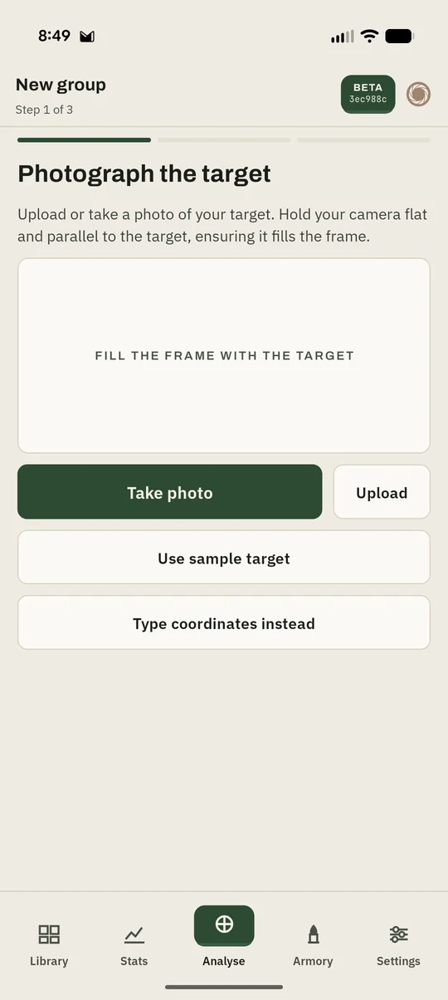
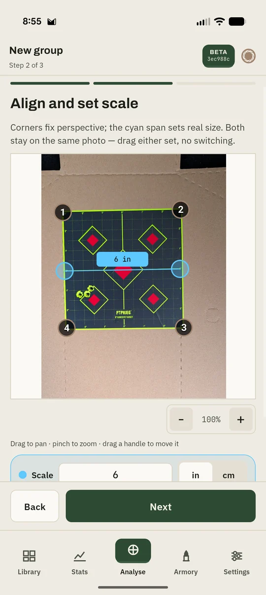
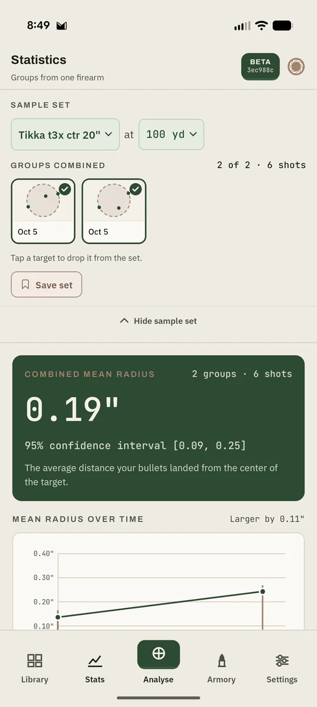
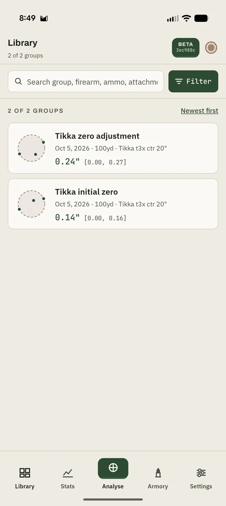
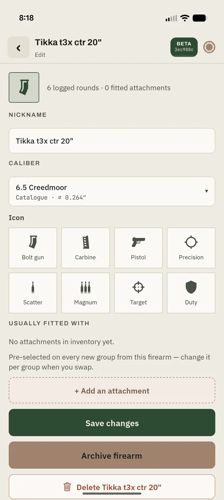

How it works
From paper to numbers in three steps.
No special targets and no extra hardware. Any target with a known measurement works.
-
01

Photograph the target
Take a photo at the range or pick one from your gallery. Hold the camera flat and fill the frame.
-
02

Align and set scale
Drag four corners to fix the perspective, then mark a known distance so every measurement is in real inches or centimetres.
-
03
Mark the holes
Tap each hole. A magnifier follows your finger so you can place it precisely. Set your point of aim and save.
The numbers
Honest statistics, not just a ruler.
Three shots don't tell you much, and Cold Bore says so. Every result comes with a 95% confidence interval, so you can tell real improvement from a lucky group.
- Mean radius
- The average distance from each shot to the group's centre. More stable than extreme spread.
- Extreme spread
- The classic centre-to-centre measurement, for comparing with everyone else.
- CEP & σ
- Circular error probable and standard deviation, for when you want to go deeper.
- Point-of-aim offset
- How far the group sits from where you aimed, to help you zero.

Your record
Every group, kept.
A logbook that does the maths. Combine groups across range days to get a sample size that means something.

Library
Search and filter every group by firearm, ammo, attachment or distance.
Trends over time
Combine groups from one firearm and watch mean radius change from session to session.

Armory
Keep your firearms, ammo and attachments, and see which setup actually shoots best.
Privacy
Your data never leaves your phone.
Cold Bore has no internet permission. It can't send anything to us or anyone else. There are no accounts, ads, analytics or tracking. Photos are stripped of GPS and camera metadata before they're stored.
Back up whenever you like by exporting a file and putting it wherever you choose.
- No internet access
- No account or sign-in
- No ads or analytics
- No subscription
- Export your data any time